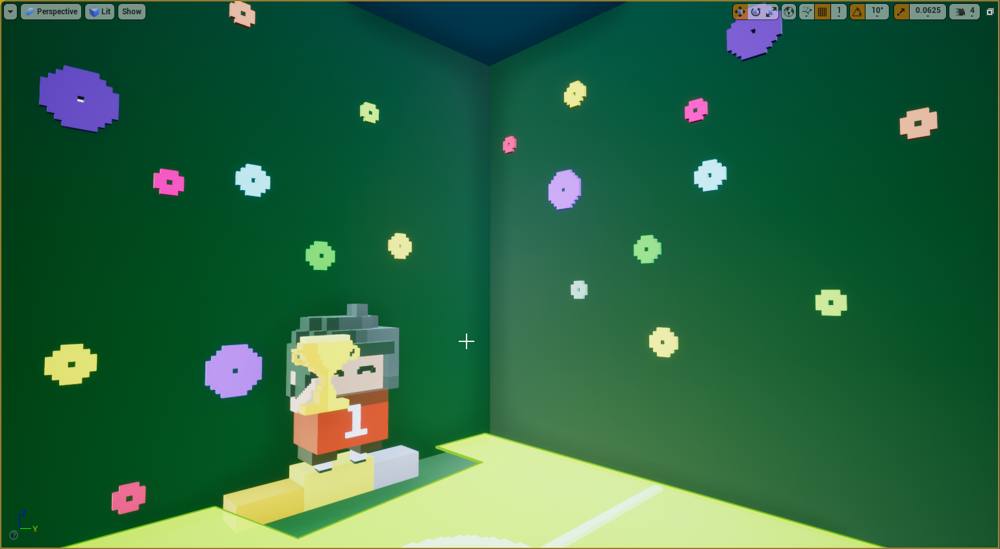

Consciousness, collaborated with Emma (Ren) Tao, is a VR escape game in which you need to read your memories and find clues to escape from the "digital slavery". It is inspired by the TV series "Black Mirror: White Christmas", which introduces the concept of creating a personal assistant by your own consciousness. Thus, this VR game sets the player as a "consciousness" who is trapped in a room--the personal assistant device. The players need to go back to their memories to find the password to escape from it. When the players touch certain objects, they will be able to travel between different memories.
We used MagicaVoxel to build all the models and scenes, and Unreal Engine 4 to design the game and interactions. The VR device we used to play the game in the documentation is Oculus.
Game design documentationBelow are some basic scenes from the game.
The main room
The awarding scene
The proposal scene